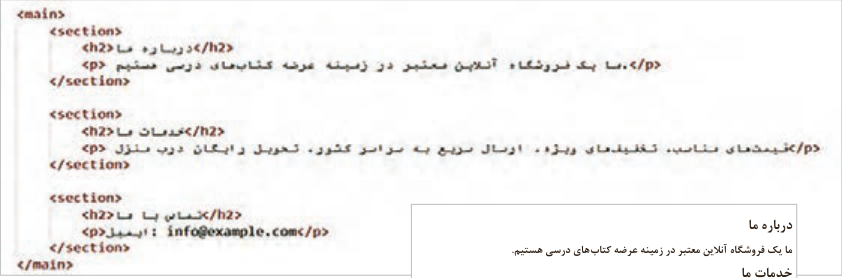
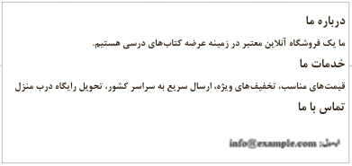
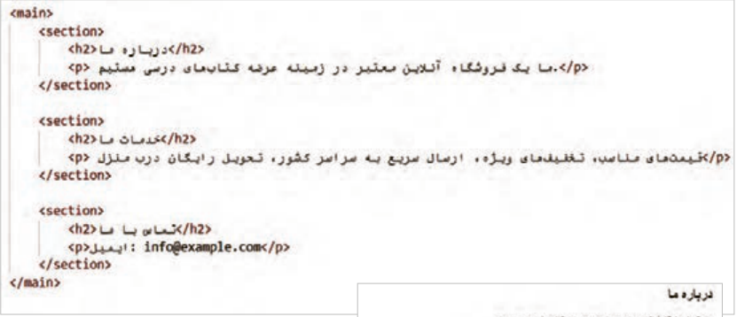
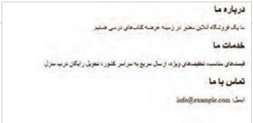
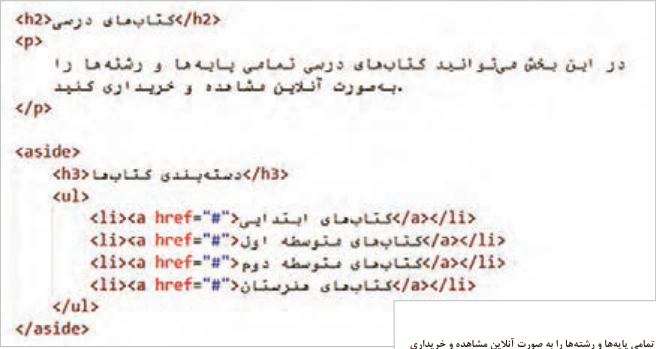
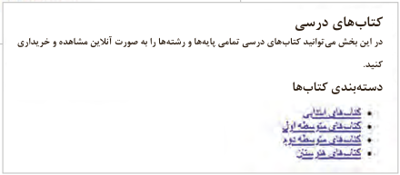
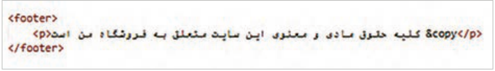
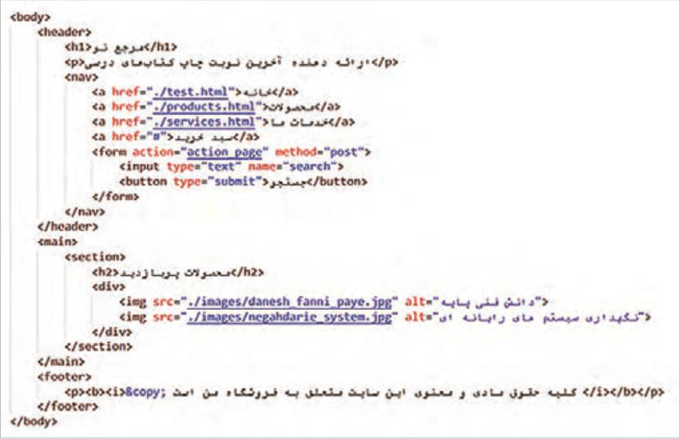
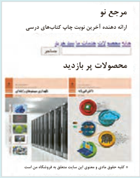

<section>: برای تقسیمبندی محتوای صفحه به بخشهای مختلف استفاده میشود (شکل18).


درباره ما ما یک فروشگاه آنلاین معتبر در زمینه عرضه کتابهای درسی هستیم.
خدمات ما قیمتهای مناسب، تخفیفهای ویژه، ارسال سریع به سراسر کشور، تحویل رایگاه درب منزل تماس با ما
خروجی
شکل18
<article>: این برچسب برای نگهداری یک محتوای مستقل و کامل قابل استفاده است، مانند پستهای وبلاگ (هر پست درون یک برچسب article) اخبار، (هر خبر درون یک برچسب article)، نظرات کاربران (هر نظر درون یک article مجزا) و کارت محصول (شامل تصویر، عنوان و قیمت).


خروجی
شکل19
صفحه ۱۱۲
<aside>: برای نگهداری محتواهای جانبی که به محتوای اصلی صفحه ارتباط دارند، مانند پیوندها، نظرات و تبلیغات (شکل 20).


کتابهای درسی
در این بخش میتوانید کتابهای درسی تمامی پایهها و رشتهها را به صورت آنلاین مشاهده و خریداری کنید.
دستهبندی کتابها
شکل 20
<footer>: برای تعریف بخش پایانی یک سند یا بخش استفاده میشود. برای تعیین ظاهر این عناصر از CSS استفاده میشود. در این قسمت اطلاعاتی مانند حق کپیرایت، نام نویسنده و طراح، لینکهای تماس، سیاستهای سایت و لینک شبکههای اجتماعی قرار میگیرد. (شکل21)

شکل 21
عناصر غیرمعنایی عناصر غیرمعنایی در HTML عناصری هستند که فقط برای گروهبندی و نگهداشتن محتوا استفاده میشوند و مفهوم خاصی دربارۀ محتوای خود انتقال نمیدهند. دو نمونه مهم از این عناصر، توسط تگهای <div> و <span> ایجاد میشوند. این عناصر برای سازماندهی بخشهای مختلف صفحه بهکار میروند، اما چون معنای مشخصی ندارند، استفاده بیرویه از آنها میتواند درک صفحه را برای موتورهای جستوجو و ابزارهای دسترسی دشوار نماید.
تگ <div> یک عنصر block-level ایجاد میکند؛ به این معنی که محتوای این عنصر در یک خط جدید قرار میگیرد. این تگ برای ایجاد ساختارهای پیچیده در صفحات و تقسیمبندی محتوا به بخشهای مختلف به کار میرود.
تگ <span> یک عنصر inline ایجاد میکند و محتوای آن در یک خط جدید قرار نمیگیرد. این تگ برای گروهبندی و استایلدهی بخشهای کوچکی از متن در درون یک خط استفاده میشود.
تگهای <div> و <span> جلوه بصری ندارند و برای تنظیمات ظاهری آنها از CSS استفاده میشود.
صفحه ۱۱۳
بهکارگیری عناصر معنایی و غیرمعنایی
کار کارگاهی
فایل test.html را باز کنید و عناصر معنایی را مطابق تصویر زیر بهکار ببرید:


مرجع نو
فایل را ذخیره کنید و نتیجه را در مرورگر مشاهده
ارائه دهنده آخرین نوبت چاپ کتابهای درسی
کنید.
محصولات پر بازدید
کلیه حقوق مادی و معنوی این سایت متعلق به فروشگاه من است
توضیحات (Comments)
کامنت یا توضیحات در HTML ابزاری مفید برای مستندسازی و یادداشتبرداری در کد HTML هستند. کامنتها امکان اضافه کردن توضیحات، یادداشتها یا اطلاعات اضافی را برای توسعهدهنده فراهم میکنند. توضیحات توسط مرورگر تفسیر نمیشوند؛ در نتیجه کاربران محتوای توضیحات را نمیبینند.
از کامنتها برای خطایابی کد (Debugging) نیز استفاده میشود، به این صورت که با غیرفعال کردن موقت بخشی از کدها، میتوان تأثیر آنها را بر روی اجرای برنامه بررسی نمود.
برای ایجاد کامنت در HTML از علامت >-- --!< استفاده میشود:
<p> This is a paragraph </p>
Page 111
<section>: Used to divide the page content into different sections (Figure 18).
About us We are a trusted online store in the field of supplying textbooks.
Our services Reasonable prices, special discounts, fast nationwide shipping, free home delivery Contact us
Output
Figure 18
<article>: This tag can be used to hold independent and complete content, such as blog posts (each post inside an article tag), news (each news item inside an article tag), user comments (each comment inside a separate article), and a product card (including image, title, and price).
Output
Figure 19
Page 112
<aside>: Used to hold side content related to the main content of the page, such as links, comments, and advertisements (Figure 20).
Textbooks
In this section you can view and purchase the textbooks for all grades and fields online.
Book categories
Figure 20
<footer>: Used to define the ending section of a document or section. CSS is used to set the appearance of these elements. In this part, information such as copyright, the name of the author and designer, contact links, site policies, and social network links is placed. (Figure 21)
Figure 21
Non-semantic elements Non-semantic elements in HTML are elements that are used only for grouping and holding content and do not convey a particular meaning about their content. Two important examples of these elements are created with the tags <div> and <span>. These elements are used to organize different parts of the page, but because they have no specific meaning, overusing them can make it difficult for search engines and accessibility tools to understand the page.
The <div> tag creates a block-level element; this means that the content of this element is placed on a new line. This tag is used to create complex structures on pages and to divide content into different sections.
The <span> tag creates an inline element and its content is not placed on a new line. This tag is used to group and style small parts of text within a line.
The <div> and <span> tags have no visual effect, and CSS is used for their appearance settings.
Page 113
Using semantic and non-semantic elements
Workshop
Open the test.html file and apply the semantic elements as in the image below:
New Reference
Save the file and observe the result in the browser
Provider of the latest edition of textbooks
.
Most visited products
All material and intellectual rights of this site belong to My Store
توضیحات (Comments)
Comments or explanations in HTML are a useful tool for documentation and note-taking in HTML code. Comments make it possible to add explanations, notes, or extra information for the developer. Explanations are not interpreted by the browser; as a result, users do not see the content of the explanations.
Comments are also used for debugging code (Debugging), in that by temporarily disabling part of the code, you can examine their effect on program execution.